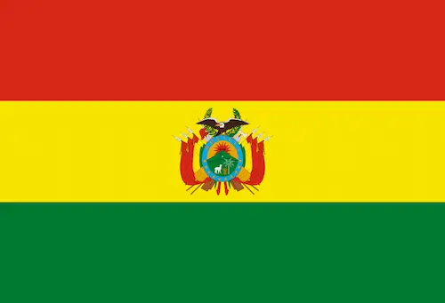

Ramiro Tapia
About Me
My name is Sebatian Ramiro Tapia Loza, but I always go by Ramiro. I was born in La Paz and live in Santa Cruz de la Sierra, Bolivia. I am currently working as a remote interpreter. I love travelling, going to new places, and out-doors activities

Santa Cruz, Bolivia

Bolivia, is a landlocked country located in central South America. In simple terms the country's geography consists of a western Andean region and tropical lowlands to the east and north. More in detail the country features a diverse geography, including the vast Amazonian plain, the Gran Chaco, temperate valleys, the high-altitude Altiplano plateau, snow-capped peaks, mountains, encompassing a wide range of climates and biomes across its regions and cities.